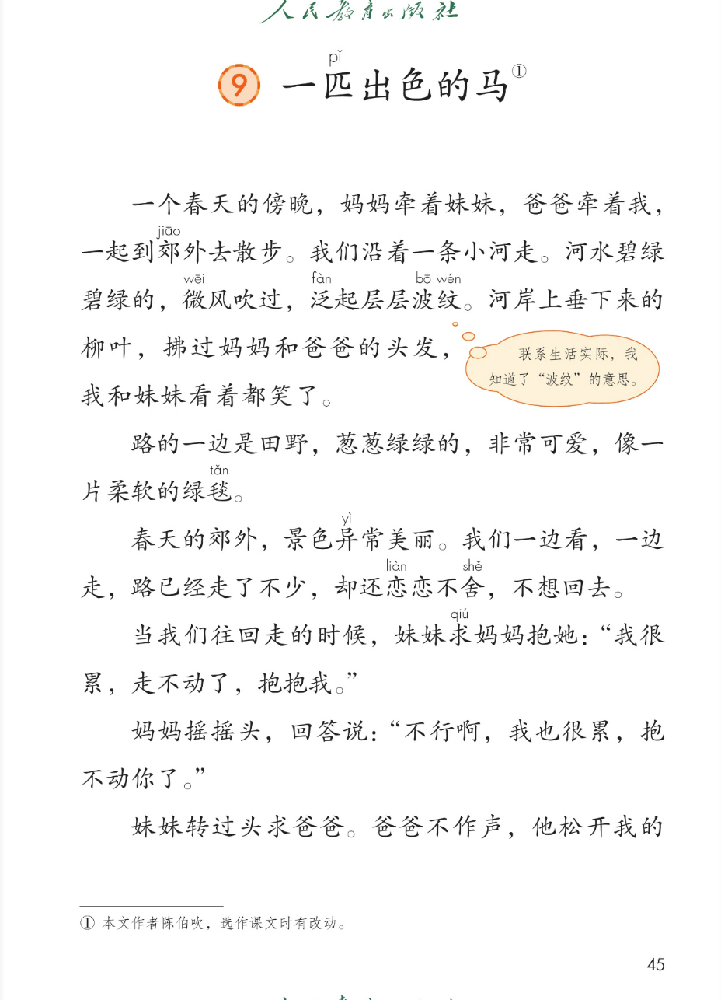
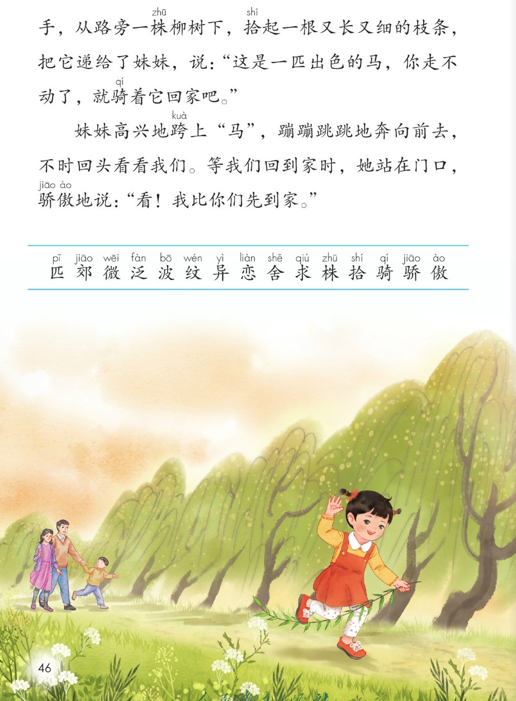
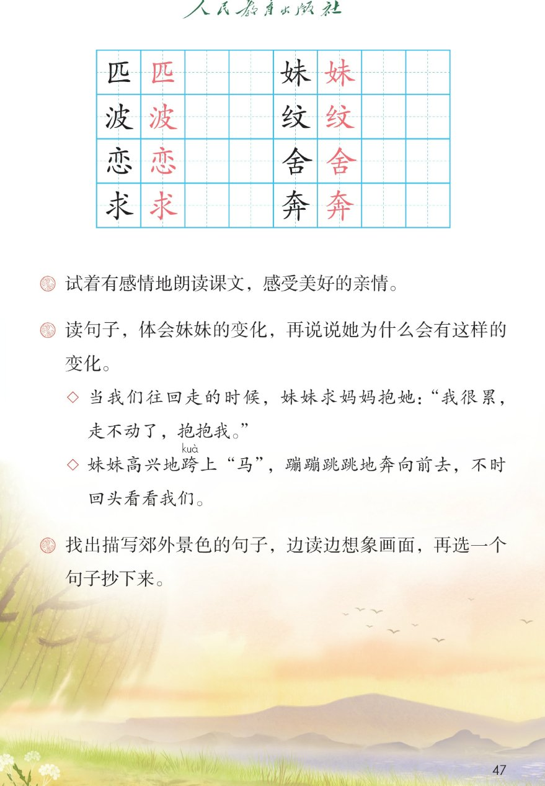

×
🔊 手机听不到声音怎么办？
① 先把手机
媒体音量调大 ，确认没开静音、没连蓝牙耳机；在微信里打开的，点右上角「⋯ → 用浏览器打开」。
② 还是没声音？到应用商店免费下载
Microsoft Edge 浏览器 （它自带朗读发声），用它打开本页面就能出声。
③ 换了 Edge 仍然没声音，说明这部手机的
硬件/系统不支持 网页朗读（多为老旧机型）；近几年买的新手机一般都能正常播放。
→ 打开声音自检
🐎 第 9 课《一匹出色的马》· 有声图文带读
统编版语文 · 第四单元·阅读 · 课本 第 45~47 页 · 作者：陈伯吹
课文 4 段 · 共 13 句
会认字 15
会写字 8
听写词 10
近义词 4 组
深入理解 8 题
本课本领 朗读·想象·体会亲情
🎧 五步学（可随时点任意一句、一个字、一个词单独听）： ① 听读课文 ——散文一篇，一句一句读，读到哪一句哪一句发光；开「跟读」后读完一句留时间让你自己读。② 学字词 ——15 个会认字、8 个会写字（含书写提示），点一个读一个。③ 词语·听写·造句 ——先读词语积累，再听写 10 个词（读两遍→你写→报答案→听示范句），最后听 4 组近义词辨析。④ 深入理解 ——8 道题（认知 / 理解 / 运用 / 拓展），开放题答案不唯一，先想后看。⑤ 分节朗读·想象画面 ——按五步想象郊游的画面，再听四位朗读者分节读这篇课文。
📚 第四单元·阅读（本课定位）： 第8课《彩色的梦》 → 第9课《一匹出色的马》 → （后续课文接用户提供的课本页序）
点段前的 ①②③④ 听整段
🔁 跟读模式：关
👁 隐藏注音（自测用）
注音只标本课要认、要写的字和课本明确标了音的字，读音来自课本第 47 页生字表
🎤 朗读要求（老师标准） 匹 读第三声，郊 读第一声，泛 读第四声，恋 读第四声，舍 读第三声，骑 读第二声，骄 读第一声；不添字、不漏字 ：逗号停得短，句号停得长，一句一句读清楚；读出一家人的温情 ：妹妹的话读得撒娇，妈妈的话读得温柔，爸爸的话读得有趣，妹妹最后骄傲的语气读得高兴；对话像人物在说话 ：引号里妹妹、妈妈、爸爸的话，用不同的语气读出来。
①
一个春天的傍晚，妈妈牵着妹mèi 妹mèi ，爸爸牵着我，一起到郊jiāo 外去散步。
我们沿着一条小河走。
河水碧绿碧绿的，微wēi 风吹过，泛fàn 起层层波bō 纹wén 。
河岸上垂下来的柳叶，拂过妈妈和爸爸的头发，我和妹mèi 妹mèi 看着都笑了。
②
路的一边是田野，葱葱绿绿的，非常可爱，像一片柔软的绿毯。
春天的郊jiāo 外，景色异yì 常美丽。
我们一边看，一边走，路已经走了不少，却还恋liàn 恋liàn 不舍shě ，不想回去。
③
当我们往回走的时候，妹mèi 妹mèi 求qiú 妈妈抱她："我很累，走不动了，抱抱我。"
妈妈摇摇头，回答说："不行啊，我也很累，抱不动你了。"
妹mèi 妹mèi 转过头求qiú 爸爸。爸爸不作声，他松开我的手，从路旁一株zhū 柳树下，拾shí 起一根又长又细的枝条，把它递给了妹mèi 妹mèi ，说："这是一匹pǐ 出色的马，你走不动了，就骑qí 着它回家吧。"
④
妹mèi 妹mèi 高兴地跨上"马"，蹦蹦跳跳地奔bēn 向前去，不时回头看看我们。等我们回到家时，她站在门口，骄jiāo 傲ào 地说："看！我比你们先到家。"
🤔 想一想（点我可跳过）
点一张图，听读整页

第 45 页 · 课题与课文前段

第 46 页 · 课文后段与识字表

第 47 页 · 会写字与课后题
📖 人教版《语文》二年级下册 · 课本第 45~47 页 · 图片仅供个人学习，版权归人民教育出版社所有
点一个字，听读音、词语和课文里的句子
结构、部首、笔画与书写提示为通用规范，供参考，以教材和老师的指导为准
匹
pǐ
一匹 · 马匹
4 画 · 半包围（匚）
左框写窄，里面儿字写稳
妹
mèi
妹妹 · 姐妹
8 画 · 左右（女）
左窄右宽，未字写稳
波
bō
波纹 · 水波
8 画 · 左右（氵）
左窄右宽，皮字写稳
纹
wén
波纹 · 花纹
7 画 · 左右（纟）
左窄右宽，文字写稳
恋
liàn
恋恋不舍 · 恋爱
10 画 · 上下（心）
上亦下心，心字写宽
舍
shě
恋恋不舍 · 舍得
8 画 · 上下（人）
上人下舌，写紧凑
求
qiú
请求 · 要求
7 画 · 独体
横竖写正，点撇对称
奔
bēn
奔跑 · 奔向
12 画 · 上下（大）
上横下撇捺，写舒展
点一行，听词语和课后题的答案
📖 课后题（课本第 47 页照录） ：① 试着有感情地朗读课文，感受美好的亲情。 ② 读句子，体会妹妹的变化，再说说她为什么会有这样的变化。 ③ 找出描写郊外景色的句子，边读边想象画面，再选一个句子抄下来。
碧绿碧绿 碧绿碧绿 碧绿
葱葱绿绿 葱葱绿绿 绿油油
柔软 柔软 软绵绵
恋恋不舍 恋恋不舍 依依不舍
读两遍 → 你在纸上写 → 报答案 → 听示范句
准备听写 · 共 10 个词
○ ○ ○
点下面的「开始听写」，听到一个词就写一个词。
▶ 开始听写
🔁 再读一遍
👁 看答案
点词听读，点句子听示范句，再自己说一句
1 妹妹 会写字 · 妹
示范句：妈妈牵着妹妹去郊外散步。
✏️ 我也能说：谁 + 牵着谁
2 波纹 会写字 · 波
示范句：微风吹过，河水泛起层层波纹。
✏️ 我也能说：什么 + 泛起波纹
3 恋恋不舍 会写字 · 恋
示范句：玩了一天，我们恋恋不舍地回家。
✏️ 我也能说：什么 + 恋恋不舍
4 请求 会写字 · 求
示范句：妹妹请求妈妈抱抱她。
✏️ 我也能说：谁 + 请求谁做什么
5 奔跑 会写字 · 奔
示范句：妹妹蹦蹦跳跳地奔向前去。
✏️ 我也能说：谁 + 奔跑去哪里
6 一匹 会写字 · 匹
示范句：爸爸说这是一匹出色的马。
✏️ 我也能说：一匹 + 什么
7 出色 词语 · 出
示范句：这是一匹出色的马。
✏️ 我也能说：什么 + 很出色
8 河水 词语 · 河
示范句：河水碧绿碧绿的，好看极了。
✏️ 我也能说：什么 + 的河水
9 杨柳 词语 · 柳
示范句：路旁有一株杨柳，枝条又长又细。
✏️ 我也能说：哪里 + 有杨柳
10 景色 词语 · 景
示范句：春天的郊外，景色异常美丽。
✏️ 我也能说：什么地方 + 景色怎样
相同点 / 不一样在哪 / 各造一句
出色 — 优秀
相同：都表示很好、比一般强 。
不一样：出色 常夸做的事棒，课文说一匹出色的马；优秀 常夸人各方面好。
出色：他画了一幅出色的画。
高兴 — 开心
相同：都表示心情好、快乐 。
不一样：高兴 和开心 意思很近，课文写妹妹高兴地跨上马；开心更口语。
高兴：收到礼物我很高兴。
柔软 — 松软
相同：都表示不硬、摸着舒服 。
不一样：柔软 常形容布、草、头发；松软 常形容泥土、面包、枕头。课文写像一片柔软的绿毯。
柔软：小猫的毛很柔软。
恋恋不舍 — 依依不舍
相同：都表示舍不得离开 。
不一样：恋恋不舍 和依依不舍 意思一样，课文写我们恋恋不舍不想回去；依依不舍也常用。
恋恋不舍：离开乐园，我恋恋不舍。
AABB 式 碧绿碧绿 葱葱绿绿 蹦蹦跳跳 恋恋不舍
又…又… 又长又细 又香又甜
一边…一边… 一边看，一边走
像…一样（比喻） 像一片柔软的绿毯
标「答案不唯一」的题，说得有道理都对
认知 课文写了一件什么事？用自己的话说一说。看解析
🤔 想一想
解析：
爸爸、妈妈、我、妹妹四个人
妹妹累了要抱，爸爸给了柳条马
妹妹骑着马自己跑回家
认知 课文可以分成几个场景？分别写了什么？看解析
🤔 想一想
解析：
去郊外，看河水柳叶
田野绿毯，恋恋不舍
妹妹累，求抱被拒
爸爸给马，自己回家
理解 妹妹的心情有什么变化？为什么会有这样的变化？看解析
🤔 想一想
解析：
累，求抱，撒娇
有了马，高兴骄傲
爸爸的柳条激发了兴致
理解 "这是一匹出色的马"指的是什么？为什么说它"出色"？看解析
🤔 想一想
解析：
爸爸拾起的柳条
让妹妹自己走回家
办法巧，有爸爸的智慧
理解 找出描写郊外景色的句子，说说美在哪里。看解析
🤔 想一想
解析：
碧绿河水、葱葱绿野
颜色鲜亮，柔软像毯
把春天写得美
运用 用"一边…一边…"说一句话。看解析
🤔 想一想
解析：
一边…一边…是同时做两件事
吃饭看书、唱歌走路都行
🌈 答案不唯一，说得有道理都对
运用 用"像…一样"或"像一片…的绿毯"这样的比喻写一句话。看解析
🤔 想一想
解析：
像…一样把甲比作乙
稻田、白云都可以
🌈 答案不唯一，说得有道理都对
拓展 你喜欢课文里的爸爸吗？为什么？看解析
🤔 想一想
解析：
有智慧，不溺爱
从撒娇到勇敢
🌈 答案不唯一，说得有道理都对
点一步，听这一步
💬 想象支架：先 想一家人去郊外 → 再 想碧绿河水、绿毯田野 → 接着 想妹妹累了撒娇 → 最后 想爸爸的柳条马和妹妹骄傲回家。
点一张卡，听这一段的句子
🌈 第1段·朗读者
第1段：一个春天的傍晚，妈妈牵着妹妹，爸爸牵着我，一起到郊外去散步。
💬 傍晚散步，读得轻松愉快
🌈 第2段·朗读者
第2段：路的一边是田野，葱葱绿绿的，非常可爱，像一片柔软的绿毯。
💬 景色美丽，读得轻柔喜欢
🌈 第3段·朗读者
第3段：当我们往回走的时候，妹妹求妈妈抱她：我很累，走不动了，抱抱我。
💬 妹妹撒娇、妈妈温柔，读出不同语气
🌈 第4段·朗读者
第4段：妹妹高兴地跨上马，蹦蹦跳跳地奔向前去，不时回头看看我们。
💬 爸爸幽默、妹妹骄傲，读得有趣高兴